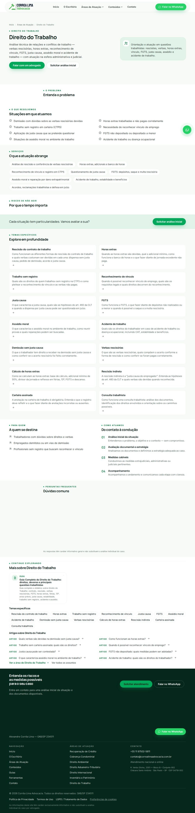
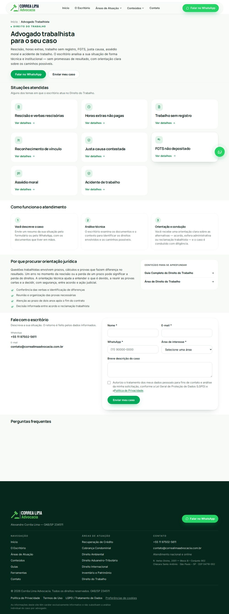
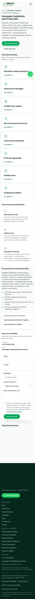
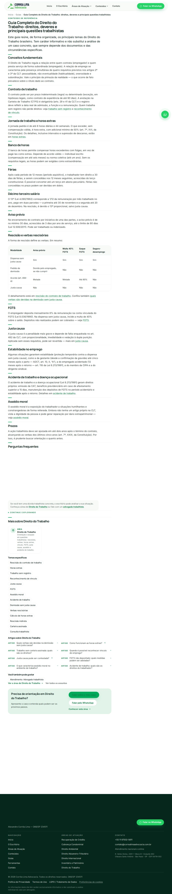
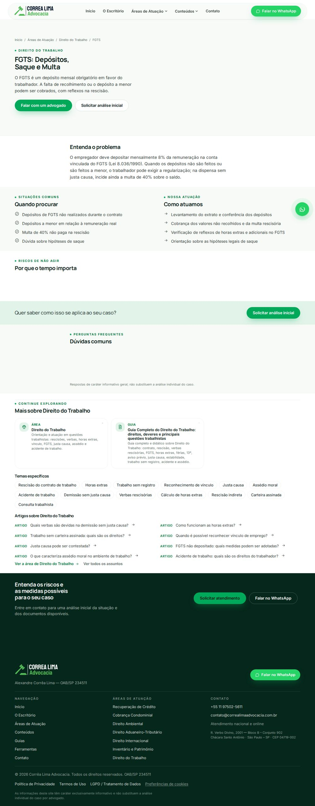
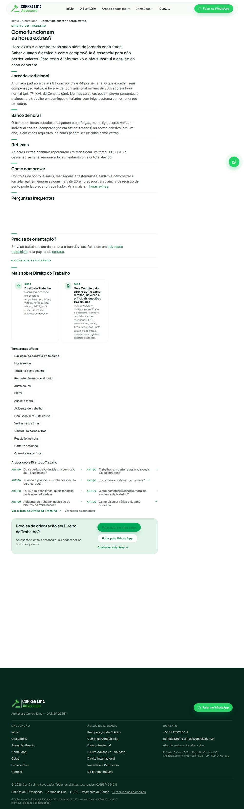
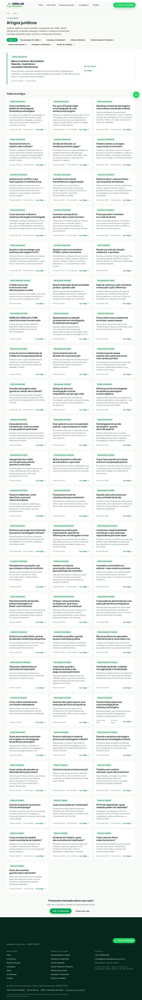

Corrêa Lima Advocacia · cluster completo (área, 14 subpáginas, guia, landing e 10 artigos) integrado à arquitetura existente, sem alterar Home, componentes, cores ou SEO das demais páginas.
nucleos.ts e as subpáginas em subtopics.ts, o novo cluster passou a aparecer automaticamente no menu “Áreas de Atuação”, no rodapé, na Home, em /areas-de-atuacao/, em /assuntos/, na listagem do blog e no RelatedHub — usando exatamente os mesmos componentes (PillarPage, SubPage, EntryPage, RelatedHub, ContactForm). Nenhum componente visual novo foi criado.
/areas-de-atuacao/direito-do-trabalho/ — via PillarPage + nucleos.ts.
Todas via SubPage + subtopics.ts, cobrindo as 14 páginas obrigatórias da seção 9.
/guias/direito-do-trabalho/ — conteúdo abrangente (conceitos, contrato, jornada, banco de horas, férias, 13º, aviso prévio, rescisão com tabela comparativa, FGTS, justa causa, estabilidade, acidente, assédio, prazos e FAQ).
/advogado-trabalhista/ — hero com CTA acima da dobra, situações, como funciona, por que procurar orientação, formulário e FAQ. Usa os componentes existentes.
Categoria “Direito do Trabalho” com 10 artigos, cada um com H1, FAQ (schema), RelatedHub, breadcrumb, tempo de leitura, meta e links internos.







| Página | Schemas emitidos |
|---|---|
| Área principal | BreadcrumbList · FAQPage · LegalService |
| Subpáginas (14) | BreadcrumbList · FAQPage · LegalService |
| Artigos (10) | BreadcrumbList · FAQPage · Article · Organization |
| Guia | BreadcrumbList · FAQPage · Article · LegalService |
| Landing | BreadcrumbList · FAQPage · LegalService · Attorney |
Cada página tem title, meta description, canonical, Open Graph e Twitter Card (a landing passou a usar o mesmo head completo do restante do site — corrigido título duplicado e adicionadas as tags OG/Twitter). Hierarquia de headings com um H1 por página, breadcrumb visível e no schema, e URLs coerentes com Title/H1/H2. Sitemap e robots atualizados automaticamente (157 URLs).
Malha verificada — 20 a 33 links do cluster por página, todos com contexto útil:
related + cards de situações + RelatedHub).RelatedHub).relacionados + links no corpo + RelatedHub).Conteúdo redigido em tom técnico, institucional e acessível, com base na legislação vigente e no entendimento consolidado, sempre com a ressalva de que se trata de material informativo e que cada caso exige análise individual — sem promessa de resultado (conforme as normas da OAB). Referências corretas: verbas rescisórias e prazo do art. 477; aviso prévio proporcional (Lei 12.506/2011); horas extras (art. 7º, XVI, da CF); vínculo (arts. 2º e 3º da CLT); justa causa (art. 482) e rescisão indireta (art. 483); FGTS (Lei 8.036/1990); acidente e estabilidade (Lei 8.213/1991, art. 118); estabilidade da gestante (ADCT, art. 10); prescrição (art. 7º, XXIX, da CF).
wa.me/tel:/mailto:) e envio de formulário (form_start, form_submit, form_success, generate_lead) via o ContactForm com data-contact-form.<details>/<summary>, formulário com labels, aria-live e foco (herdados do ContactForm).alt ausente; nenhum recurso pesado adicionado.| Problema | Correção |
|---|---|
Artigos e guia sem <h1> (faltava o heading # no corpo, conforme a convenção do site) | H1 inserido nos 11 arquivos; também eliminou um leve scroll horizontal derivado da estrutura |
| FAQ schema não gerava (parser exige pergunta em negrito) | 26 perguntas convertidas para **negrito**; FAQPage passou a ser emitido |
Landing com <title> duplicado e sem OG/Twitter | Passou a usar o head completo (buildChildHead): título correto + OG + Twitter |
| 6 subpáginas obrigatórias ainda inexistentes | Criadas (calculo-de-horas-extras, rescisao-indireta, verbas-rescisorias, carteira-assinada, consulta-trabalhista, demissao-sem-justa-causa) |
Criados:
src/pages/areas-de-atuacao/direito-do-trabalho.astro
src/pages/advogado-trabalhista/index.astro
src/content/guias/direito-do-trabalho.md
src/content/blog/*.md (10 artigos)
Modificados (apenas dados/config):
src/lib/nucleos.ts (7º núcleo) · src/lib/subtopics.ts (14 subpáginas) · src/content.config.ts (cluster no enum)
Componentes reutilizados (0 novos): PillarPage, SubPage, EntryPage, RelatedHub, ContactForm, Container, Breadcrumb, Icon, JsonLd, cards e botões existentes. Menu, rodapé, Home, Assuntos e blog atualizaram-se sozinhos a partir dos dados.
dist/ para public_html/ (cPanel > Gerenciador de Arquivos), substituindo os arquivos./areas-de-atuacao/direito-do-trabalho/ e /advogado-trabalhista/.npm install → npm run build.